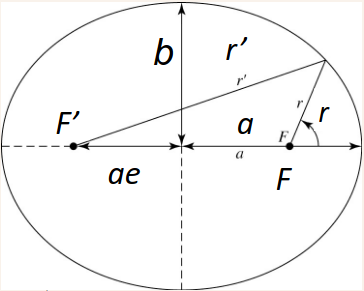
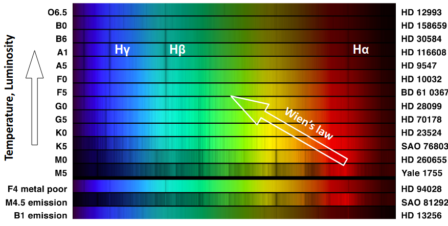
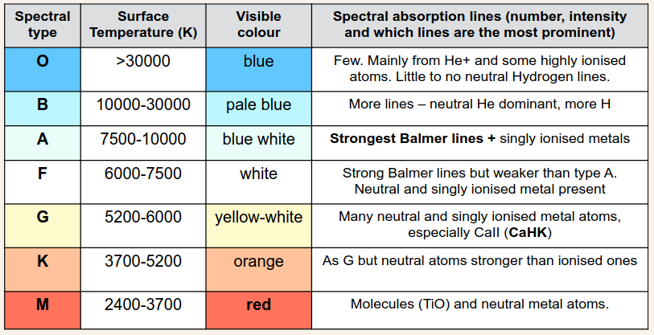
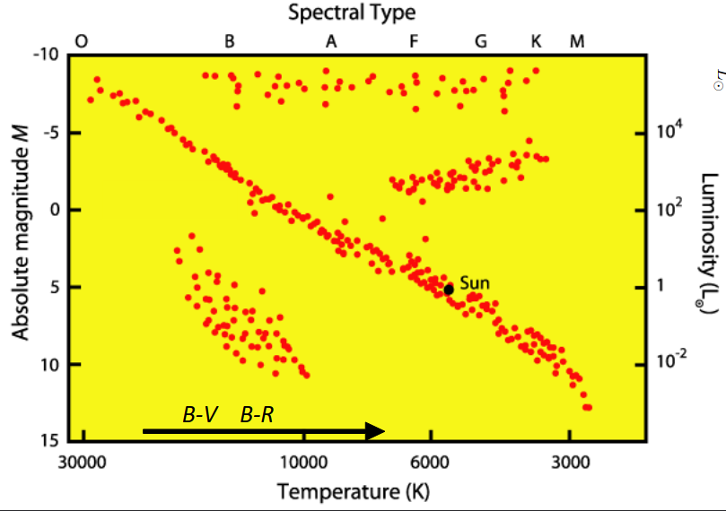
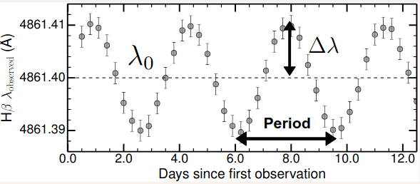

PHYS263-Astronomy_Intro
- Measuring Distances
- Parallax
- Ellipses
- Kepler's Laws
- Periapsis and Apoapsis
- Position vs Physical Quantities in Ellipses
- Centre of Mass
- Orbits
- Solar vs Sidereal Day
- Mapping the Skies
- Magnitudes
- Apparent Magnitude (\(m\))
- Colour in Astronomy
- Absolute Magnitude: \(m\;\text{at}\;d=10\;\text{pc}\)
- Distance Modulus
- Blackbody Radiation
- Emission and Absorption Lines
- The Bohr Atom - Hydrogen
- Telescopes
- Classifying Stars
- Star Formation
- Detecting other Planetary Systems
- Stellar Populations
- Redshift
- Galaxies
- Luminosity Functions
Measuring Distances
Within Sol
Consider the Sun, Earth and an interior planet, e.g. Venus. P is the period of the inner planet and a the average distance of the planet to the Sun. Using radar at an ideal time, e.g. during the transit of Venus, we can easily measure the minimum distance Earth-Venus (EV). This means that: \[P^2=ka^3\implies Y^2=\frac{P^2_E}{P^2_V}=\frac{a^3_E}{a^3_V}\implies a_E=\frac{(EV)Y^{2/3}}{Y^{2/3}-1}=1\text{AU}\]
Parallax
...is the angle subtended by the apparent motion of a ‘nearby’ star relative to the celestial sphere, caused by the orbit of the Earth around the Sun. \[d(\text{pc})=\frac{1\text{AU}}{\theta('')}\] \(\theta\) is measured in arcsec ('',1/3600 deg). It is the angular displacement relative to a fixed background when the Earth moves by 1 AU. For Summer-Winter, Earth moves by 2 AU, so divide that angle by 2, to get \(\theta\).
Ellipses
An ellipse is defined by a set of points in a plane such that

\[r+r'=2a\qquad\qquad\frac{x^2}{a}+\frac{y^2}{b}=1\] where \(a\) is the semi-major axis, \(b\) is the semi-minor axis, and \(r\) and \(r'\) represent the distances to the ellipse from the two focal points or focii. The parameter \(e\) is the eccentricity of the ellipse, and is defined as the distance between the focii divided by the length of the major axis \(2a\), implying that each focus is a length \(ae\) from the centre. \[e=\frac{ae}{a}\] In polar coordinates we can describe an ellipse from the principle focus \(F\) with the equation \[r=\frac{a(1-e^2)}{e\cos\theta+1}\]
Kepler's Laws
- The planets orbit the Sun in ellipses with the sun at one focus.
- The line joining the planet to the Sun sweeps out equal areas in equal times. \(\dot{A}=L/2m=\text{const}\)
- Harmonic Law: \[P^2=Ka^3\] where \(P\) is the period, and \(a\) is average separation. For an orbit around the Sun if \([P]=\text{years}\) and \([a]=\text{AU}\), then \(K=1\). We can use Newtons laws with a circular orbit to find \[K=\frac{4\pi^2}{GM}\]
Periapsis and Apoapsis
...highest and lowest speed. \[\text{Periapsis=closest}\implies\theta=0\implies r_{pe}=\frac{a(1-e^2)}{e+1}\] \[\text{Apoapsis=farthest}\implies\theta=\pi\implies r_{pe}=\frac{a(1-e^2)}{e-1}=a(1+e)\]
Position vs Physical Quantities in Ellipses
We can use Newtons gravitational force law to derive an equation to track \(r\) as a function of orbit position and related with physical quantities in the system. For a body with a relatively small mass \(m\) relative to a large mass \(M\): \[r=\frac{L^2}{GMm^2(1+e\cos\theta)}\] Comparing this to the equation we have to describe an ellipse from the principle focus \(F\), it implies that \[L=\sqrt{GMm^2a(1-e^2)}\] We can use these expressions (and \(|\mathbf{L}|=|\mathbf{r}\times\mathbf{p}|\))to derive the speeds of orbit at perihelion and aphelion \[\begin{align} &v_p=\sqrt{\frac{GM(1+e)}{a(1-e)}}\\ &v_{ap}=\sqrt{\frac{GM(1-e)}{a(1+e)}} \end{align}\] Since e is always positive (by definition), we can see that the velocity at perihelion is always high than at aphelion (in agreement with Kepler’s Second Law).
Centre of Mass
We can define the reduced mass: \[\mu=\frac{m_1m_2}{m_1+m_2}\qquad F=\mu a\qquad r_1m_1=r_2m_2\qquad r=r_1+r_2\] We can then write K's III'rd in a more general form with \(r\) being the separation between particles and \(\omega\) is the angular frequency. \[\frac{Gm_1m_2}{r^2}=\mu a=\frac{m_1m_2}{m_1+m_2}r\omega^2\] We can then use \(P=\frac{2\pi}{\omega}\), \[\implies P^2=\frac{4\pi^2r^3}{G(m_1+m_2)}\]
Orbits
The energy of a particle in orbit is as follows \[\begin{align} E&=\frac{1}{2}m(v_R^2+v_T^2)-\frac{GMm}{r}\\ &=\frac{1}{2}mv_R^2+\underbrace{\frac{L^2}{2mr^2}-\frac{GMm}{r}}_{U_r} \end{align}\] The four orbital cases are:
- \(E=E_\text{min}\): Closed orbit, Circle, only one possible \(r\) value.
- \(E\lt 0\): Closed orbit, ellipse with \(e\lt 1\).
- \(E=0\): Open orbit, parabola (\(e=1\))
- \(E\gt0\): Open orbit, hyperbola (\(e\gt1\))
Solar vs Sidereal Day
There is a discrepancy between the day we use in our lives (solar day) and the sidereal day, due to the fact that the Earth is rotating as it orbits the Sun.
- Sidereal Day: one rotation of the Earth on its axis relative to the stars
- Solar Day: one rotation of the Earth on its axis relative to the Sun (our “normal” day)
Solar day is 4 mins longer. Hence solar year is one day shorter than sidereal year.
Mapping the Skies
- Right ascension (R.A.) measured eastwards (+) in the equatorial plane. Represented by a time (hr, min, sec) with \(15^\circ=1\text{hr}\) from \((360^\circ/24\text{hr})\). "Sexagesimal."
- Declination (Dec.) measured as an angle in degrees able the R.A. plane (x-y). Aloowed values are \((-90, 90)^\circ\)
Conversions: \[\begin{align} &\text{H:M:S}(\text{hours,hex})=15\left(H+\frac{M}{60}+\frac{S}{3600}\right)\\ &\text{D:M:S}(\text{deg,hex})=\left(H+\frac{M}{60}+\frac{S}{3600}\right)\\ \end{align}\]
Angular Separation Between Sources
Angular separation (\(\theta\)) = plane-of-the-sky distance between two sources. BUT don’t forget trigonometric adjustment for RA because of being offset from the equatorial plane (analogous to equator line). \[\begin{align} &\Delta RA=(RA_1-RA_2)\cos(Dec)\\ &\Delta Dec=Dec_1-Dec_2\\ &\implies\theta=\sqrt{\Delta RA^2+\Delta Dec^2} \end{align}\]
Energy: Luminosity \(L\)
We also have the unit \[1\;\text{erg}\;\text{s}^{-1}=10^{-7}\;\text{W}\] There is the following relation between an objects luminosity and the flux from the object passing through an area: (energy per second per area \(f\)) \[f=\frac{L}{4\pi d^2}\qquad [f]=\text{Wm}^{-2}=\text{erg}\;\text{s}^{-1}\text{cm}^{-2}\] so we can define \(d\) as the luminosity distance \[d=\sqrt{\frac{L}{4\pi f}}\] We also have flux density: Energy per second per area per \(\lambda\) or \(\nu\). \[f_\lambda,f_\nu\implies f=\int f_\lambda\;d\lambda\] These can also be defined for a wavelength or frequency band s.t. \[f_\text{band}=\int^{\lambda_\text{max, band}}_{\lambda_\text{min, band}}f_\lambda\;d\lambda\]
Magnitudes
Apparent Magnitude (\(m\))
A means of quantifying how bright an object is in the sky. \[\boxed{m_1-m_\text{ref}=-2.5\log\left(\frac{F_1}{F_\text{ref}}\right)}\] We an use the reference of Vega \(m_\textrm{vega}=m_\textrm{ref}=0\) with \(F_\text{vega}=2.84\times 10^{-8}\;\text{W m}^{-2}\). We can therefore write \[m=-2.5\log(F)+2.5\log(F_\text{ref})\] where we can say that the last term is the zero point \(Z_p\) and then calculate that and store it for later use. \[\boxed{m=-2.5\log(F)+Z_p}\] where for the Vega reference we can sat that \(Z_p=-18.87\) \[\boxed{\implies m=-2.5\log(F_{SI}/\text{W m}^2)-18.87}\]
Colour in Astronomy
In astronomy, colour is the difference in magnitudes for the same source, measured with different filters or band-passes: \(m_{b1}-m_{b2}\). \[m_{b1}-m_{b2}=-2.5\log\left(\frac{f_{b1}}{f_{b2}}\right)\] If the filters to discern the bands are B and V, the B-V colour is: \[m_B-m_V=B-V=-2.5\log\left(\frac{f_B}{f_V}\right)\] were we have the following bands 
In astronomy we typically calculate colours as the difference of a bluer-redder mag, such that \[\begin{align} &\Delta m=(m_{\lambda-}-m_{\lambda+})\gt0:\;\text{"red"}\\ &\Delta m=(m_{\lambda-}-m_{\lambda+})\lt 0:\;\text{"blue"}\\ \end{align}\]
Absolute Magnitude: \(m\;\text{at}\;d=10\;\text{pc}\)
A given object observed further away will appear fainter, and thus will have a higher (larger) magnitude. \[M=m-5\log(d)+5\] (with \(d\) in \(\text{pc}\)), or \[M=m+5\log\theta+5\] for parallax \(\theta\) in \(\text{arcsec('')}\).
Distance Modulus
We can use the definition of the different magnitudes to define something called the distance modulus \(D_M\) \[D_M(\text{pc})=m-M=5\log(\text{d/pc})-5\] We can also use this to obtain distances \[d=10^{\frac{D_M-25}{5}}\text{Mpc}\]
Blackbody Radiation
For blackbodies the thermal ration emitted by the Planck function \[SB_\lambda(T,\lambda)=\frac{f_\lambda(T,\lambda)}{\text{steradian}}=\frac{2hc^2}{\lambda^5(e^{\frac{hc}{\lambda k_BT}}-1)}\] Surface brightness or intensity is measured in: Power per unit area per unit wavelength per steradian = \(f_\lambda/\text{sr}\).
Wien's Displacement Law
We can differentiate the Planck function to find the beak to find \[\lambda_\text{max}T=2.898\times 10^{-3}\;[\text{mK}]\]
Blackbodies: Luminosity
We can treat stars as blackbodies. The Planck function is flux at the surface per steradian so, the we can integrate it over the solid angle to find \[f_s(T)\equiv\text{flux at surface}=\sigma T^4\] To obtain the luminosity we can integrate this over spherical coordinates to find \[\boxed{L(T)=4\pi R^2\sigma T^4}\implies f_s=\frac{L}{4\pi R^2}\] Hence we can measure the flux \(f\), distance \(D\) and temperature \(T\) of the star to determine i ts radius \(R\) \[\boxed{R=\sqrt{\frac{fD^2}{\sigma T^4}}}\] We can combine these equations with other quantities we derive earlier to find \[\boxed{M_1-M_2=2.5\log\left(\frac{L_2}{L_1}\right)}\] \[M_1-M_\odot=2.5\log\left(\frac{L_\odot}{L_1}\right)\implies\boxed{\frac{L}{L_\odot}=10^{0.4(M_\odot-M)}}\] Useful to determine the radius of a star \[\boxed{\frac{R}{R_\odot}=\sqrt{\frac{LT^4_\odot}{L_\odot T^4}}}\]
Emission and Absorption Lines
The Bohr Atom - Hydrogen
In general, for a simple system: an electron at level \(n\) around a positive charge \(Z\) has an energy of \(E\) \[E(n)=-13.6\frac{Z^2}{n^2}\text{eV}\qquad\text{For $^1$H,}\;Z=1\] We have the Rydberg Formula \[\frac{1}{\lambda}=R\left[\frac{1}{n^2_f}-\frac{1}{n^2_i}\right]\] For hydrogen \(R=E_\text{ion}/hc=1.097\times 10^7\;\text{m}^{-1}\) To see these transitions the atom needs to be excited. The ratio of electrons in a given \(n+1\) energy level (in relation to level \(n\)) is given by the Boltzmann equation and is a function of temperature: \[\text{Excitation:}\qquad\frac{N_{n+1}}{N_n}=\left(\frac{g_{n+1}}{g_n}\right)\exp\left(\frac{-(E_{n+1}-E_n)}{Tk_b}\right)\] for neutral hydrogen \(g_n\propto 2n^2\) \[\text{Excitation:}\qquad\frac{N_{n+1}}{N_n}=\left(\frac{g_{n+1}}{g_n}\right)\exp\left(\frac{-(E_{n+1}-E_n)}{Tk_b}\right)\] In order to estimate the ratio of ionised to neutral atoms of a specific element, we use the Saha equation (“similar” to Boltzmann, but for ionisation): \[\frac{N_{II}}{N_I}\propto T^\frac{5}{2}e^\frac{-E_\text{ion}}{Tk_b}\]
Doppler Effect
For \(v\lt\lt c\): \[\frac{\Delta\lambda}{\lambda}=\frac{\lambda_\text{obs}-\lambda_0}{\lambda_0}=\frac{v}{c}\] for the relativistic case (\(v\sim c\)): \[\frac{\Delta\lambda}{\lambda_0}=\sqrt{\frac{1+v/c}{1-v/c}}-1\]
Doppler Effect + Kepler's Third Law
We know \[P^2=\frac{4\pi^2a^3}{G(M_1+M_2)}\] we can find that \(a=P(v_1+v_2)/2\pi\) from \(a=a_1+a_2\) and \(v_{1,2}=2\pi a_{1,2}/P\). Such that \[P^2=\frac{4\pi^2 P^3(v_1+v_2)^3}{8\pi^3G(M_1+M_2)}\] \(v_1, v_2\) are average rotational velocities. With Doppler we measure radial (projected) velocities. The former are larger than the latter as we only see a fraction of their motion. We have \(v_{d1,d2}=v_{1,2}\sin i\) where \(i\) is the inclination angle of the orbit. (\(0^\circ\)=face on, \(90^\circ\)=edge on) \[M_1+M_2=\frac{P(v_{d1}+v_{d2})}{2\pi G\sin^3i}\] where \(v_{d1,d2}=c\Delta\lambda_{1,2}/\lambda\).
Widths of Spectral Lines
- Quantum effects, Heisenberg's uncertainty principle: \(|\Delta E|\Delta t\approx\hbar\). Use Rydberg s formula then solve for \(\Delta\lambda\)Thus \(\Delta\lambda\approx\lambda^/2\pi c\Delta t\). This effect is tiny, and negligible.
- Thermal Broadening, movement of gas particles: \(\Delta\lambda=\lambda/c \times\sqrt{2k_BT/m +v^2_\text{turb}}\).
- Dynamics. Turbulent motion affects the thermal broadening equation. Rotation of the gas also affects the lines \(\Delta\lambda=v_\text{rot}\sin(i)\lambda/c\)
Telescopes
Radiation Collecting Power (\(RC_P\)). Capturing more photons means we can see fainter sources. The collecting power of a telescope is the area of its lens or mirror. Therefore: \[RC_P=A=\pi R^2\implies\boxed{RC_P\propto D^2}\] Resolution of a telescope is \(\Delta\theta\), commonly quoted in arcsec ('') as an angle. The limit in resolution of a telescope results from diffraction as the light goes through an aperture and thus depends on diameter \(D\) and wavelength \(\lambda\) \[\Delta\theta\propto\frac{\lambda}{D}\implies\Delta\theta=1.22\frac{\lambda}{D}\qquad\text{Rayleigh Criterion}\] The f-number (focal ratio) F# or f# is defined as the ratio of the focal length to the diameter of the lens. \[f\#=\frac{f}{D}\]
Data Reduction
\[\text{Raw data = (Astro Flux+Sky Flux)$\times$Pixel Response + Read-out}\] We want \(\text{Astro Flux}\) so we can follow the obvious method to find it. We can then use Astrometry to calibrate the data. \[m_\text{star}-m_\text{ref}=-2.5\log\left(\frac{\text{Counts}_\text{star}}{\text{Counts}_\text{ref}}\right)\] thus \[m_\text{star}=-2.5\log(\text{Counts}_\text{star})+ZP_\text{counts}\]
Classifying Stars
Spectral Types
"Oh Be A Fine Gal Kiss Me!" This is a mnemonic to remember the spectral types. Note that each class is subdivided with a numeric digit with 0 being the hottest and 9 being coolest.

Harvard Stellar Classification:

HR Diagrams
Hertzsprung-Russell Diagrams are a plot of Luminosity against decreasing Surface Temperature.

We can calculate the stellar radius for any position in the HR diagram, since HR is \(L\) vs \(T\): \[\frac{R}{R_\odot}=\sqrt{\frac{LT_\odot^4}{L_\odot T^4}}\] We can go beyond that if we remember \(L=4\pi R^2\sigma T^4\) which in log axes, becomes \[\log(L)=\log(4\pi\sigma)+2\log R+4\log T\] When we plot an HR diagram, we are actually plotting the Stefan Boltzmann law for a blackbody, with a stronger dependence on \(T\) than on \(R\).
Mass: \[L\propto M^4\]Or in solar units\[\frac{L}{L_\odot}=\left(\frac{M}{M_\odot}\right)^4\]
Usually \(0.1M_\odot\lt M\lt 100M_\odot\).
Stellar Lifetime
When a star loses 10% of its hydrogen, it destabilises. The main sequence lifetime \(\sim\text{(available energy)/(avg Luminosity)}\) \[\implies\tau\propto\frac{M}{L}=\frac{M}{M^4}\implies\boxed{\tau\propto M^{-3}}\] The Suns expected lifetime is \(\tau_\odot\sim10^{10}\;\text{yrs}\) hence \[\tau=\tau_\odot\left(\frac{M}{M_\odot}\right)^{-3}\]
Star Formation
The Jeans mass is defined as the total mass required for a certain temperature \(T\) and radius \(R\) needed for a cloud of gas to collapse into a star. \[M_J=\frac{5k_BTR_c}{G\mu m}\] where \(\mu\) is the molecular weight and \(m\) is the mass of the gas atom.
Initial Mass Function
The initial mass function (IMF) describe the number of stars per stellar mass when stars are born. \[\phi=\frac{dN}{dM}=AM^\alpha\] Mass in stars per mass \[\xi=M\phi=\frac{dM_*}{dM}\] Not all gas mass is converted to stars. We can use the star-formation efficiency (SFE) to parameterise the fraction that ends up in stars: \[M_*=\text{SFE}\times M_\text{gas}\] We can use basic calculus on these expressions to find out information about birth rates.
After fusion
There are three cases:
- Electron degeneracy \(\to\) White Dwarf for \(M\lt 1.44M_\odot\) (Chandrasekhar Limit)
- Neutron degeneracy \(\to\) Neutron Star for \(M\lesssim 3M_\odot\).
- Else \(\to\) Black Hole.
From accretion of matter (usually from a binary star system planetary nebula) a white dwarf can gain mass above the Chandrasekhar limit and undergo a type 1A supernova.
Detecting other Planetary Systems
Finding planets around other stars has been a key goal in Astronomy, however, planets are on average ~100 million times fainter than stars. Planets can be found in 5 main different ways
- Direct Detection - Extremely challenging.
- Astrometric (wobble) - Star wobbling due to mass of heavy planets. We use \[P^2=\frac{4\pi^2 a^3}{G(M_\text{star}+m_p)}\] with \(a=a_\text{star}+a_\text{planet}\) and \(a_\text{planet}m_\text{planet}=a_\text{star}M_\text{star}\)
- Gravitational lensing the image of a background star behind a star with a planet can be lopsided.
- Spectroscopic detections - Radial velocities: \(v_pm_p=v_sM_s\). The wobble of the star caused by the mass of planets is imprinted on its absorption lines by the Doppler effect.
 - Transit Detections: Planets moving in front of their stars cause a dip in the light visible from Earth. \(A_p=f_\text{loat}\times A_s\implies R_p=\sqrt{A_p/\pi}\).
Stellar Populations
Stellar populations in the Milky Way can be broken into two populations:
- Population I stars: Young, metal-rich and blue. In spiral galaxies mostly in the disk + bulge
- Population II stars: Old, metal-poor and red. In spiral galaxies mostly in the halo + bulge
Note, to astronomers metals are ALL elements heavier than H & He. There are also population III stars, which are the first stars after the B-Bang. Leavitt law (1912): Cepheid (variable/pulsating) stars: their luminosity is a function of their pulsating period. \[\begin{align} &\log(L/[\text{W}])=1.195\log(P/[\text{days}])+28.95\\ &0.394M_V=-\log(P/[\text{days}])-0.657 \end{align}\]
Redshift
We define redshift \[z=\frac{\lambda_\text{obs}-\lambda_0}{\lambda_0}\implies v_\text{shift}=cz\implies d=\frac{zc}{H_0}\]
Galaxies
Measuring Distant Galaxies
We can measure magnitudes in different bands to find \[M_*[M_\odot]\propto10^{0.4\times M_V}\times\frac{\text{Mass}}{\text{Luminosity}}\] We also have the gas fraction \[f_\text{gas}=\frac{M_\text{gas}}{M_\text{total}}\] The star formation rate SFR of a galaxy is \[\text{SFR}=\frac{\Delta M}{\Delta t}\]
Luminosity Functions
We can define the number of galaxies per unit volume \(\Phi\) such that \[\frac{d\Phi}{dL}=\underbrace{\frac{\Phi^*}{L^*}}_\text{Normalisation}\times\underbrace{\left(\frac{L}{L^*}\right)^\alpha}_\text{power-law}\times\underbrace{e^{-L/L^*}}_\text{exponential}\] This is the Schetcher function. It has parameters \(\Phi^*,L^*,\alpha\). It may be written in the form \[\Phi(L)dL=\frac{\Phi^*}{L^*}\left(\frac{L}{L^*}\right)^\alpha e^{-L/L^*}dL\] Integrating the Schetcher function provides luminosity densities or SFR densities or mass densities. The integral of SFR function gives star formation rate density \[\text{SFRD[M$_\odot$yr$^{-1}$Mpc$^{-3}$]}=\int\Phi(SFR)\;dSFR=\Phi^*\times SFR^*\times\Gamma(\alpha+2)\] By integrating the star-formation rate density at each redshift we can predict the stellar mass density \[\rho_{M_*}=\int_0^\infty SFRD\;dt\]